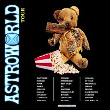

Achievements

Grammy Award
Travis Scott won his first Grammy in 2020 for Best Rap Song, "SICKO MODE".

Astroworld Album Success
Astroworld became a multi-platinum success and earned numerous chart-topping positions.

Highest-Grossing Tour
The "Astroworld" tour became one of the highest-grossing tours of 2019.